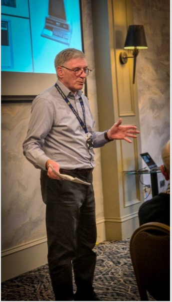

New Member Garry Smith's Career History

Rotarian Garry Smith spent a career specialising in software tools and services for business advisers, management consultancies and economic development agencies, with applications created for numerous organisations throughout the UK and abroad.
Garry, a retired metallurgist, was born and grew up in Stranraer, moving to Ayr in 1985. He graduated in Metallurgy from Strathclyde University and then secured a role in RB Tennent, Coatbridge, steel roll manufacturers, before moving back to university, this time as a research staff member.
However, an opportunity arose to join Chiltern Brothers in Girvan to help them improve their manufacturing processes, using his developed computer expertise.
After 10 years working in his home town, Garry took the quantum leap and became a co-founder of a company which commercialised the findings of previous research into IT and software development for the manufacturing industry.
Since 1995 Sirius Concepts Ltd has specialised in the completed paper based forms, face to face interviews provision of software tools and services to support business assessments, diagnostics and surveys. They have developed a comprehensive range of tools that support the collection of assessment data from and self-assessments completed online.
Garry said they also worked internationally supporting programmes in Australia and South Africa.
The software framework create by Sirius allowed tailored assessments to be easily created to meet the wide variety demanded by their clients. The key strength of their tools was their flexibility to support many different types of assessments, coupled with a customisable analysis and reporting capability.
Garry has since retired.
Alan Meikle gave a worthy vote of thanks.